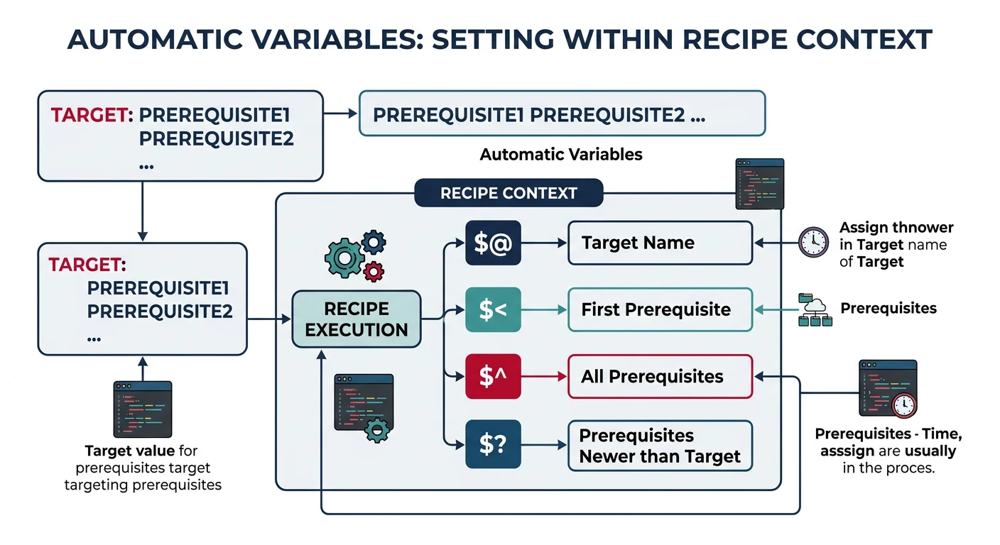
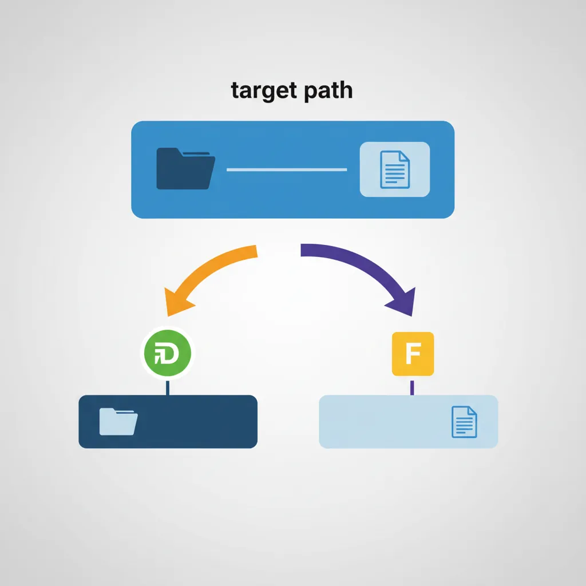
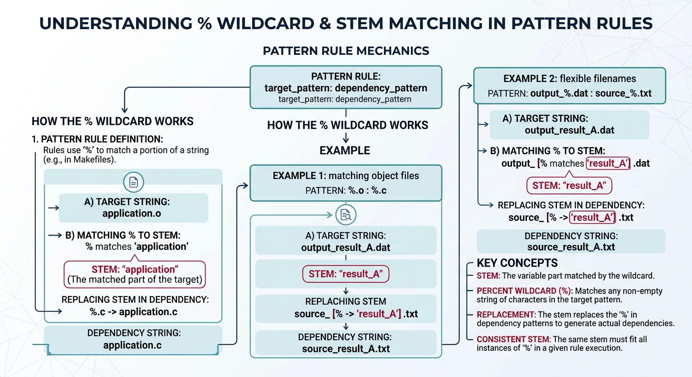
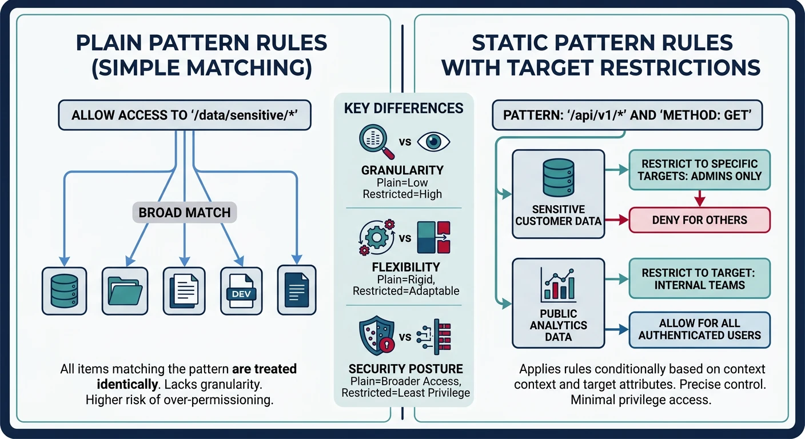
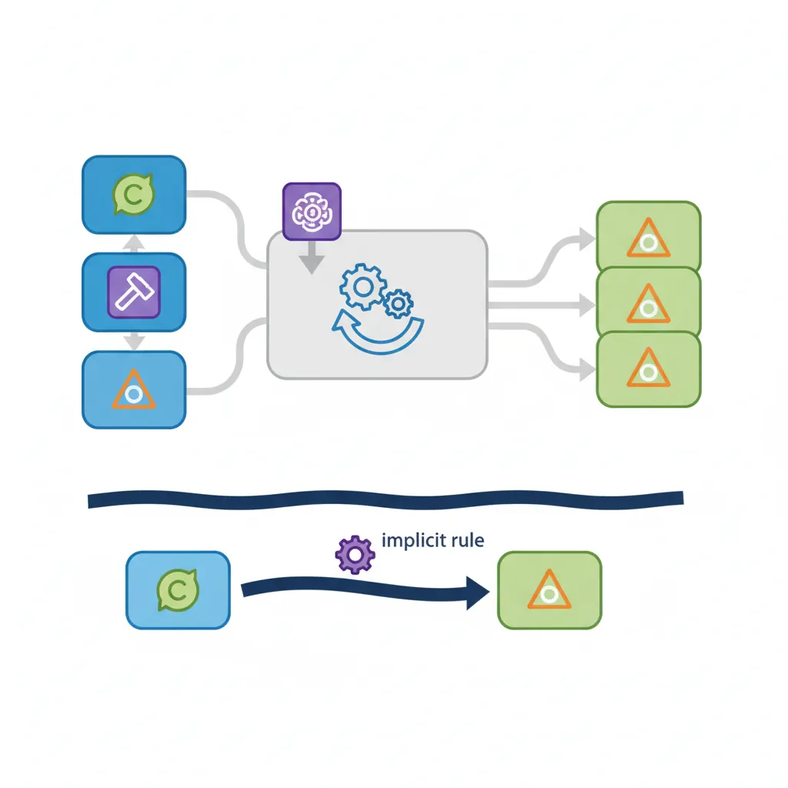

We use cookies to enhance your browsing experience, serve personalized content, and analyze our traffic. By clicking "Accept All", you consent to our use of cookies. See our Privacy Policy for more information.
GNU Make Mastery Part 4: Automatic Variables & Pattern Rules
February 20, 2026Wasil Zafar20 min read
Eliminate repetition in your Makefiles with automatic variables ($@, $<, $^, $?, $*) and pattern rules (%.o: %.c) that scale to any number of source files automatically.
Part 4 of 16 — GNU Make Mastery Series. With Part 3's variable fundamentals mastered, we now tackle automatic variables and pattern rules — the features that turn a Makefile for 5 files into a Makefile that handles 500.
Automatic variables are special variables that Make sets within each recipe based on the target and prerequisites of the rule being executed. They are only valid inside recipes — not in variable assignments or prerequisites lists.

Automatic variables ($@, $<, $^, $?) are set per-rule and only available inside recipes
Reference
Automatic Variable Quick Reference
Variable
Expands To
$@
The target name
$<
The first prerequisite
$^
All prerequisites (no duplicates)
$+
All prerequisites (with duplicates)
$?
Prerequisites newer than the target
$*
The stem matched by % in a pattern rule
$(@D)
Directory part of $@
$(@F)
File part of $@
$(<D)
Directory part of $<
$(<F)
File part of $<
$@ — The Target
Expands to the name of the current target. This is the most-used automatic variable.
Expands to only those prerequisites whose modification time is newer than the target. Useful for incremental archiving and partial rebuilds.
# Only re-archive object files that changed since the last ar run
libutils.a: utils.o stringops.o fileio.o
ar rcs $@ $? # only adds the *changed* .o files — fast incremental update
$* — Stem
In a pattern rule, $* expands to the stem — the portion matched by the % wildcard. Essential for constructing output paths.
# In pattern rule: %.o: %.c
# When building foo.o from foo.c:
# $* = foo (the stem, without extension)
# $@ = foo.o (the target)
# $< = foo.c (the source)
build/%.o: src/%.c
@mkdir -p $(dir $@)
$(CC) $(CFLAGS) -c $< -o $@
# When building build/net/tcp.o from src/net/tcp.c:
# $* = net/tcp (directory + stem)
Directory and File Components
Every automatic variable has companion D (directory) and F (file) variants. These are critical when targets live in subdirectories.

$(@D) and $(@F) extract the directory and file parts from the target path
Putting It All Together — Annotated Real-World Rule:
# Complete C project build using every major automatic variable:
CC := gcc
CFLAGS := -Wall -Wextra -std=c11
SRCS := main.c utils.c network.c
OBJS := $(SRCS:.c=.o) # → main.o utils.o network.o
# Link rule: $@ = target (myapp), $^ = all prerequisites (all .o files)
myapp: $(OBJS)
$(CC) -o $@ $^
# ↑ $@ = myapp
# ↑ $^ = main.o utils.o network.o
# Compile rule: $< = first prereq (the .c), $@ = target (the .o)
%.o: %.c
$(CC) $(CFLAGS) -c $< -o $@
# ↑ $< = foo.c (first prereq only)
# ↑ $@ = foo.o (the target)
# Archive rule: $? = only the prereqs NEWER than the target
libutils.a: utils.o network.o
ar rcs $@ $?
# ↑ $@ = libutils.a
# ↑ $? = only .o files that changed
Sample Source Files
Self-contained examples: Automatic-variable and pattern-rule examples compile main.c, utils.c, network.c, and foo.c. Drop these files next to your Makefile and every snippet will build cleanly.
main.c
/* main.c — calls helpers from all modules */
#include <stdio.h>
#include "utils.h"
int main(void) {
utils_greet("Pattern Rules");
return 0;
}
/* foo.c — placeholder module used in pattern-rule examples */
#include <stdio.h>
void foo(void) {
printf("foo() called\n");
}
Pattern Rules
A pattern rule uses % as a wildcard in both the target and prerequisite. Make matches any target of the right shape and substitutes the stem into the prerequisite. Write one rule to compile all your C files.

The % wildcard in pattern rules matches a stem that is substituted into both target and prerequisite
Basic Pattern Rules
CC := gcc
CFLAGS := -Wall -Wextra -std=c11
# Pattern rule: compile every .c → .o
%.o: %.c
$(CC) $(CFLAGS) -c $< -o $@ # $< = the .c source, $@ = the .o target
# Pattern rule: link every single-file binary
%: %.o
$(CC) $(LDFLAGS) -o $@ $< # $@ = binary name (stem), $< = its .o file
# With separate build directory:
BUILDDIR := build
OBJ := $(BUILDDIR)/main.o $(BUILDDIR)/utils.o
$(BUILDDIR)/%.o: src/%.c
@mkdir -p $(BUILDDIR) # create build/ if it doesn't exist (@ = silent)
$(CC) $(CFLAGS) -c $< -o $@ # $< = src/foo.c, $@ = build/foo.o
Static Pattern Rules
A static pattern rule restricts which targets the pattern applies to. This prevents Make from applying the pattern to unintended file names.

Static pattern rules restrict pattern matching to a named set of targets for predictable builds
Why static over plain pattern? A plain %.o: %.c can match any.o target in the entire Makefile. A static pattern rule only applies to the named target list ($(OBJS)), making the build more predictable and catching typos in file lists.
Chained Pattern Rules
Pattern rules can chain: if Make can't find a direct prerequisite but can build it by applying rules in sequence, it will.
GNU Make ships with a library of implicit rules for common compilation patterns (C, C++, Fortran, Yacc, Lex, etc.). These use CC, CFLAGS, CXX, CXXFLAGS from your Makefile or environment.

GNU Make's built-in implicit rules automatically handle common patterns like %.o from %.c
# You can rely on implicit rules — Make knows %.o: %.c already
CC = gcc
CFLAGS = -Wall -O2
main.o: main.h utils.h # only list extra headers the .c needs
# No recipe needed — Make's built-in %.o: %.c rule takes care of it
Best Practice: While relying on implicit rules is fine for toy projects, always write explicit pattern rules in production Makefiles. Implicit rules can be hard to debug, may vary between Make versions, and become invisible contributors to build failures.
# See all built-in implicit rules:
make -p | grep -A2 "^%.o"
# Disable ALL implicit rules to speed up large builds:
MAKEFLAGS += -r # in Makefile
# or
make -r # from CLI
Hands-On Milestone
Milestone: Write a zero-repetition Makefile using automatic variables and a static pattern rule — one that can accommodate any number of source files by only changing the SRCS variable.
# --- Setup: create source files and Makefile ---
mkdir -p src
cat > src/main.c << 'EOF'
#include <stdio.h>
#include "utils.h"
int main(void) {
utils_greet("Pattern Rules");
return 0;
}
EOF
cat > src/utils.h << 'EOF'
#ifndef UTILS_H
#define UTILS_H
void utils_greet(const char *name);
int utils_add(int a, int b);
#endif
EOF
cat > src/utils.c << 'EOF'
#include <stdio.h>
#include "utils.h"
void utils_greet(const char *name) { printf("Hello, %s!\n", name); }
int utils_add(int a, int b) { return a + b; }
EOF
cat > src/network.c << 'EOF'
#include <stdio.h>
void net_connect(const char *host, int port) {
printf("Connecting to %s:%d\n", host, port);
}
EOF
cat > src/foo.c << 'EOF'
#include <stdio.h>
void foo(void) { printf("foo() called\n"); }
EOF
# --- Try it ---
make info # display all variable values
make # compiles src/*.c → build/*.o → links myapp
make # nothing rebuilt (up-to-date)
touch src/utils.c
make # only recompiles utils.c and re-links
make clean # remove build artifacts
Continue the Series
Part 5: Built-in Functions & Make Language
Use wildcard, patsubst, foreach, call, and $(shell) to auto-generate source lists, filter targets, and build self-configuring Makefiles.